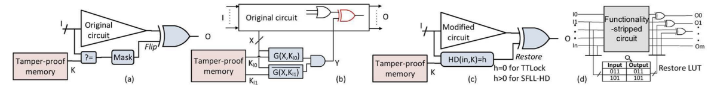
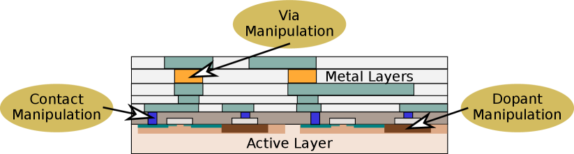
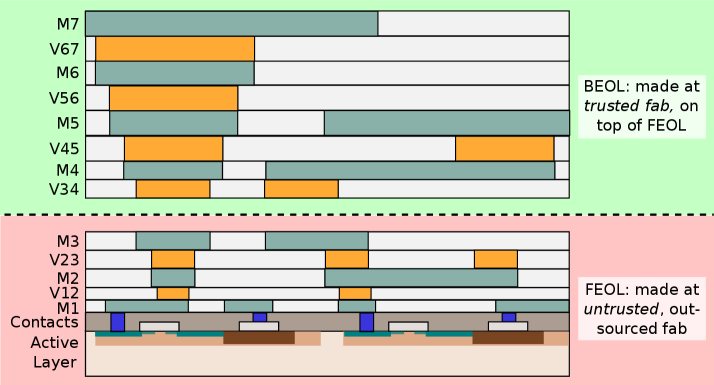

حماية الملكية الفكرية لتصميم الشرائح: نظرة عامة
الملخص
دفعت التكلفة المتزايدة لتصنيع الدارات المتكاملة (IC) معظم الشركات مع مرور الوقت إلى “التحول إلى نموذج الشركات عديمة المصانع”. وقد أفرز اتجاه الإسناد الخارجي المقابل متجهات هجوم متعددة، مثل الإنتاج الزائد غير المشروع للدارات المتكاملة، أو قرصنة الملكية الفكرية للتصميم (IP)، أو إدراج أحصنة طروادة عتادية (HTs). وقد تُنفَّذ هذه الهجمات بواسطة كيانات غير موثوقة موجودة في مختلف أنحاء سلسلة التوريد، بدءًا من المسابك غير الموثوقة ومنشآت الاختبار، ووصولًا حتى إلى المستخدمين النهائيين. وللتغلب على هذا الطيف الواسع من التهديدات، اقتُرحت تقنيات متعددة خلال العقد الماضي. في هذه الورقة، نستعرض مشهد تقنيات حماية الملكية الفكرية، التي يمكن تصنيفها إلى إقفال المنطق، وتمويه التخطيط، والتصنيع المقسّم. ونناقش تاريخ هذه التقنيات، ثم أحدث التطورات في هذا المجال، والقيود ذات الصلة، ونطاق العمل المستقبلي.
1. مقدمة
مع ازدياد اعتماد حياتنا الحديثة على تقنية المعلومات المنتشرة في كل مكان، أصبح ضمان أمن الدارات المتكاملة (ICs) الكامنة وموثوقيتها أمرًا بالغ الأهمية وفي الوقت نفسه شديد الصعوبة. فعلى سبيل المثال، حذّر باحثون من هجمات قوية تستهدف التنفيذ التخميني في الدارات المتكاملة للمعالجات (kocher18, ; lipp18, )، كما حلّلوا تسرب القنوات الجانبية في الوحدات التشفيرية (lerman18, ). وإلى جانب هذه المخاوف المتعلقة بالأمن أثناء زمن التشغيل، تمثل الحماية من تهديدات أخرى مثل الهندسة العكسية (RE)، وقرصنة الملكية الفكرية (IP)، والإنتاج الزائد غير المشروع، وإدراج أحصنة طروادة العتادية (HTs)، تحديًا آخر. وتجدر الإشارة إلى أن هذه التهديدات تنشأ بسبب الطابع المعولم والموزع لسلاسل توريد الدارات المتكاملة الحديثة، التي تمتد عبر أطراف ودول عديدة (rostami14, ). خلال العقد الماضي، اقتُرح عدد كبير من مخططات الحماية (وقد نُفّذ بعضها انتقائيًا بالفعل في السيليكون)، ويمكن تصنيفها بوجه عام إلى إقفال المنطق، وتمويه التخطيط، والتصنيع المقسّم. وتسعى هذه التقنيات كلها إلى حماية العتاد من مهاجمين مختلفين، كما يلخص الجدول 1.
| Technique | FEOL/BEOL Foundry | Test Facility | End-User |
| Logic Locking | ✓/✓ | ✓ (see also (yasin16_test, )) | ✓ |
| Layout Camouflaging | ✗/✗ (✓/✗ (patnaik17_Camo_BEOL_ICCAD, ), ✓/✓ (rangarajan18_MESO_arXiv, )) | ✗ (✓ (rangarajan18_MESO_arXiv, )) | ✓ |
| Split Manufacturing | ✓/✗ (✗/✓ (wang17_FEOL, )) | ✗ | ✗ (✓ (patnaik18_3D_ICCAD, ; gu2018cost, )) |
في هذه الورقة، نقدم نظرة عامة على المخططات المختلفة، مع مناقشة نماذج التهديد، والتطورات الحديثة، ومسارات الهجوم، والقيود، والاتجاهات المستقبلية للبحث. وتعد هذه الورقة أيضًا متابعةً لمسح سابق (rajendran2014regaining, ).
2. إقفال المنطق
2.1. المفهوم
يحمي إقفال المنطق (LL) الملكية الفكرية عن طريق إدراج أقفال مخصصة تُشغَّل بمفتاح سري. وتُحقَّق هذه الأقفال عادةً بمنطق إضافي مقحم (مثل بوابات XOR/XNOR، وبوابات AND/OR أو جداول البحث (LUTs)). ولا تُفعَّل الدارة المتكاملة المقفلة إلا بعد التصنيع (ولكن قبل النشر)، وذلك بتحميل المفتاح السري في ذاكرة مخصصة على الشريحة مقاومة للعبث. وتجدر الإشارة إلى أن التحقيق الآمن للذاكرات المقاومة للعبث لا يزال قيد البحث والتطوير (tuyls06, ; anceau17, ).
2.2. نموذج التهديد

بوجه عام، يصف نموذج التهديد قدرات المهاجمين والموارد المتاحة لهم. كما يصنف الكيانات إلى موثوقة وغير موثوقة. ويمكن تلخيص نموذج التهديد الخاص بإقفال المنطق على النحو الآتي:
-
•
يُعد بيت التصميم موثوقًا، وكذلك المصممون وأدوات أتمتة التصميم الإلكتروني (EDA) التي يعملون بها، في حين يُعد المسبك ومنشأة الاختبار والمستخدمون النهائيون جميعًا غير موثوقين.
-
•
يعرف المهاجمون مخطط إقفال المنطق الذي طُبّق.
-
•
يستطيع المهاجمون الوصول إلى قائمة التوصيلات المقفلة (مثلًا عن طريق الهندسة العكسية). ومن ثم يمكنهم تحديد مداخل المفتاح والمنطق المرتبط بها، لكنهم يجهلون المفتاح السري الفعلي.
-
•
لا يمكن العبث بالمفتاح السري، لأنه مبرمج في ذاكرة مقاومة للعبث.
-
•
يمتلك المهاجمون شريحة عاملة بالفعل، مثلًا مشتراة من السوق المفتوحة. ويمكن لهذه الشريحة أن تؤدي دور “أوراكل” لتقييم أنماط الدخل/الخرج.
من دون معرفة المفتاح السري، يضمن إقفال المنطق أن: (i) تفاصيل التصميم الأصلي لا يمكن استعادتها بالكامل؛ (ii) الدائرة المتكاملة غير وظيفية، أي إنها تنتج مخرجات غير صحيحة؛ و(iii) يكون الإدراج المستهدف لأحصنة طروادة العتادية صعبًا؛ إذ إن المهاجم، في غياب التصميم المستعاد، لا يستطيع بسهولة تحديد المواضع المناسبة لإدراج هذه الأحصنة.
2.3. مخططات إقفال المنطق والهجمات عليها
اقترحت الأبحاث المبكرة الإقفال العشوائي (RLL) (roy10, )، والإقفال المستند إلى تحليل الأعطال (FLL) (JV-Tcomp-2013, )، والإقفال القائم على التداخل القوي (SLL) (JV_DAC_2012, )—وذلك للحماية من البحث الشامل والهجمات البسيطة الأخرى. وتحدد هذه التقنيات مواضع مناسبة ولكن منتقاة لتضمين المفتاح؛ وقد قوّضتها هجمات متعددة (JV_DAC_2012, ; plaza15, ; li19piercing, ).
في 2015، تحدى Subramanyan وآخرون (subramanyan15, )
أمن جميع مخططات إقفال المنطق المعروفة آنذاك.
ويستفيد هجومهم من قابلية الإرضاء البوليانية (SAT) لحساب
ما يسمى أنماط إدخال مميِّزة (DIPs).
وينتج نمط DIP مخرجات مختلفة للدخل نفسه عند مفتاحين مختلفين (أو أكثر)، مما يدل على أن
مفتاحًا واحدًا على الأقل غير صحيح.
ويقيّم الهجوم تدريجيًا أنماط DIPs مختلفة إلى أن تُستبعد كل المفاتيح غير الصحيحة.
وتقع أسوأ حالة للهجوم عندما لا يستطيع إلا حذف مفتاح غير صحيح واحد لكل نمط DIP؛ وهنا
يلزم من أنماط DIPs لحل  بتًا من المفتاح.
وبوجه عام، يمكن تمثيل مقاومة أي مخطط إقفال لهجوم SAT بعدد أنماط DIPs اللازمة
لفك المفتاح الصحيح (xie16_SAT, ).
بتًا من المفتاح.
وبوجه عام، يمكن تمثيل مقاومة أي مخطط إقفال لهجوم SAT بعدد أنماط DIPs اللازمة
لفك المفتاح الصحيح (xie16_SAT, ).
في 2016، قُدّم SARLock (yasin16_SARLock, ) وAnti-SAT (xie16_SAT, ) بوصفهما مخططي دفاع ضد الهجوم القائم على SAT (subramanyan15, ). يستخدم SARLock (الشكل 1(a)) إفسادًا مضبوطًا للخرج، عبر جميع المفاتيح غير الصحيحة، من أجل نمط دخل واحد بالضبط. كما يمكن دمج SARLock مع مخططات أخرى عالية القابلية للإفساد (مثل FLL أو SLL) لتوفير دفاع ذي طبقتين. وفي Anti-SAT (xie16_SAT, )، تتقارب كتلتان منطقيتان متتامتان، مضمنتان ببوابات المفتاح، عند بوابة AND (الشكل 1(b)). ويكون خرج بوابة AND هذه دائمًا ‘0’ عند المفتاح الصحيح؛ أما عند المفتاح غير الصحيح فقد يكون ‘1’ أو ‘0’، تبعًا للمدخلات. ثم تغذي بوابة AND هذه بوابة XOR إضافية تُقحم في التصميم الأصلي، وبذلك قد تستحث مخرجات غير صحيحة للمفاتيح غير الصحيحة. ويستخدم كلا المخططين مفهوم الدوال أحادية النقطة ويفرضان قابلية منخفضة لإفساد الخرج للحصول على مقاومة ضد الهجوم القائم على SAT.
وقد جرى الالتفاف تقريبيًا على دفاع SARLock ذي الطبقتين بواسطة AppSAT (shamsi17, ; shamsi18_TIFS, ) وDouble DIP (shen17, ). وفي كلا الهجومين، يُختزل الجمع بين جزء منخفض الإفساد (مقاوم لهجمات SAT) وجزء عالي الإفساد (معرض لهجمات SAT) إلى الجزء منخفض الإفساد (مثلًا من SARLock + SLL إلى SARLock). علاوة على ذلك، يستطيع Double DIP (shen17, ) حذف مفتاحين غير صحيحين على الأقل في كل تكرار، مما يزيد كفاءة الهجوم. أما في Anti-SAT، فتُظهر الكتلتان المتتامتان في صميمه انحرافات ملحوظة في الإشارات، مما يجعلهما قابلتين للتمييز عن سائر المنطق، وقد استغل Yasin وآخرون ذلك في هجوم انحراف احتمال الإشارة (SPS) (yasin_2017_sps, ). كما أن كلًا من SARLock وAnti-SAT معرض لـ هجوم التجاوز (xu17_BDD, ). ويختار هذا الهجوم مفتاحًا عشوائيًا ويحدد المدخلات التي تعطي مخرجات غير صحيحة لذلك المفتاح المختار. ثم يُنشأ منطق إضافي حول كتل Anti-SAT/SARLock لاستعادة الدارة الكلية من هذه المخرجات غير الصحيحة.
وخلاصة القول، على الرغم من أن SARLock وAnti-SAT يبرهنان مقاومة متفوقة للهجوم التأسيسي SAT (subramanyan15, )، فإنهما يظلان معرضين لتنويعات أخرى من هجمات SAT (مثل AppSAT وDouble DIP) وكذلك للهجمات البنيوية (مثل SPS وهجوم التجاوز). ويُلاحظ أيضًا أن كلا المخططين يبقيان الملكية الفكرية المراد حمايتها على حالها إلى حد كبير، مما يفتح الباب أمام هجمات الإزالة (yasin17_CCS, ; yasin17_TETC, ).
2.4. مخططات متقدمة لإقفال المنطق
في TTLock، يُعدَّل المنطق الأصلي من أجل نمط دخل واحد بالضبط (yasin_glsvlsi_2017, ). وتُستعاد قيمة الخرج الخاصة بهذا النمط المحمي باستخدام كتلة مقارنة، كما هو موضح في الشكل 1(c). وحتى إذا نجح المهاجم في إزالة كتلة المقارنة، فإنه يحصل على تصميم مختلف عن التصميم الأصلي (ولو لنمط دخل واحد فقط).
واستكمالًا لمسار TTLock، اقترح Yasin وآخرون (yasin17_CCS, ) إقفال المنطق بتجريد الوظيفة (SFLL). ويتمتع SFLL بمقاومة لمعظم الهجمات الحالية، ويتيح الموازنة بين مقاومة هجمات SAT وهجمات الإزالة (yasin17_CCS, ). وهو يستند إلى فكرة “التجريد والاستعادة”، حيث يُزال جزء من التصميم الأصلي وتُخفى الوظيفة المقصودة. كما نفذ المؤلفون شريحة استعراضية بتقنية GLOBALFOUNDRIES ذات 65nm. ولـ SFLL ثلاثة متغيرات، هي SFLL-HD (yasin17_CCS, )، وSFLL-flex (yasin17_CCS, )، و SFLL-fault (sengupta2018atpg, ; sengupta2018customized, )، وسنناقشها كلها بإيجاز أدناه.
يعد SFLL-HD نسخة معممة من TTLock تتيح للمصمم حماية عدد أكبر من أنماط الدخل
المختارة.
وبصورة أدق، يحمي SFLL-HDh عدد من مكعبات الدخل التي تقع على مسافة هامنغ (HD) مقدارها  من المفتاح السري ذي
من المفتاح السري ذي
 بت.11
1
مكعبات الدخل هي أنماط دخل محددة جزئيًا؛ إذ تُضبط بعض بتات الدخل (على ‘0’ أو ‘1’)
بينما تُضبط بتات أخرى على حالة لا يهم (‘X’).
ويشمل مكعب دخل مكوّن من n بت مع
بت.11
1
مكعبات الدخل هي أنماط دخل محددة جزئيًا؛ إذ تُضبط بعض بتات الدخل (على ‘0’ أو ‘1’)
بينما تُضبط بتات أخرى على حالة لا يهم (‘X’).
ويشمل مكعب دخل مكوّن من n بت مع  بتًا محددًا (أو بتات اعتناء) عدد من أنماط الدخل (yasin17_CCS, ).
وتحدد قيمتا
بتًا محددًا (أو بتات اعتناء) عدد من أنماط الدخل (yasin17_CCS, ).
وتحدد قيمتا  و
و المفاضلة بين مقاومة هجمات SAT ومقاومة هجمات الإزالة.
وينبغي أيضًا ملاحظة أن SFLL-HD
يحمي مجموعة مقيدة من مكعبات الدخل،
وكلها مستندة إلى مفتاح سري واحد.
أما SFLL-flexc×k، فيتيح، على النقيض من ذلك، حماية أي
المفاضلة بين مقاومة هجمات SAT ومقاومة هجمات الإزالة.
وينبغي أيضًا ملاحظة أن SFLL-HD
يحمي مجموعة مقيدة من مكعبات الدخل،
وكلها مستندة إلى مفتاح سري واحد.
أما SFLL-flexc×k، فيتيح، على النقيض من ذلك، حماية أي  مكعب دخل مختار،
لكل منها
مكعب دخل مختار،
لكل منها  بتات محددة.
وهنا، تُمثَّل الأنماط المحمية
عادةً باستخدام مجموعة صغيرة من مكعبات الدخل، ثم تُخزَّن في
جدول بحث على الشريحة (الشكل 1(d)).
وفي SFLL-fault،
تُستثمر إرشاديات قائمة على حقن الأعطال
لتحديد أنماط متعددة وحمايتها، ولخفض كلفة المساحة في الوقت نفسه.
بتات محددة.
وهنا، تُمثَّل الأنماط المحمية
عادةً باستخدام مجموعة صغيرة من مكعبات الدخل، ثم تُخزَّن في
جدول بحث على الشريحة (الشكل 1(d)).
وفي SFLL-fault،
تُستثمر إرشاديات قائمة على حقن الأعطال
لتحديد أنماط متعددة وحمايتها، ولخفض كلفة المساحة في الوقت نفسه.
يستخدم كل من SFLL-HD وSFLL-flexc×k أشجار AND تترك مؤشرات بنيوية لمهاجم مواتٍ. وقد بُرهن حديثًا على مثل هذا الهجوم من قبل Sirone وآخرون (sirone18, )؛ إذ فك المؤلفون المفتاح بنجاح (حتى من دون الوصول إلى أوراكل). وفي وقت كتابة هذه الورقة، لم تُبرهن بعد أي هجمات على SFLL-fault.
قدم Shamsi وآخرون (shamsi2018cross, ) مخططًا لإقفال المنطق يتمحور حول التخطيط، يعتمد على قضبان تحويل للتوجيه تضم فيّات معماة وقابلة للتهيئة.
وأخيرًا، اقتُرح مفهوم الإقفال الحلقي في (shamsi17_GLSVLSI, ) ووُسّع في (roshanisefat18, ). وتتمثل الفكرة في إنشاء حالات إقفال يُفترض أنها غير قابلة للحل عبر إدخال دورات تغذية راجعة. إلا أن صيغ SAT مصممة خصيصًا قد تحدت مخططات الإقفال هذه (zhou17_CycSAT, ; shen19, ).
2.5. اتجاهات مستقبلية لإقفال المنطق
اقترحت أعمال حديثة الإقفال المعلمي (yasin_glsvlsi_2017, ; xie2017delay, ; zaman2018towards, ; chakraborty2018gpu, )؛ ويتمثل جوهره في إقفال معاملات التصميم وملامحه. فعلى سبيل المثال، في (xie2017delay, )، لا يحمي المفتاح وظيفة التصميم فحسب، بل يحمي أيضًا ملمحه الزمني. وينتج عن مفتاح صحيح وظيفيًا لكنه غير صحيح زمنيًا انتهاكات توقيتية، مما يؤدي إلى أعطال في الدارة. وقد تجاوز هجوم SAT قائم على التوقيت، عُرض في (chakraborty2018timingsat, )، نهج الإقفال التوقيتي الوارد في (xie2017delay, ). لذلك، يلزم إجراء مزيد من البحث في الإقفال المعلمي. وأخيرًا، دُعي مؤخرًا أيضًا إلى إقفال الإشارات المختلطة، مثلًا في (jayasankaran2018towards, ; leonhard19mixlock, ).
3. تمويه التخطيط
3.1. المفهوم
الهدف من تمويه التخطيط (LC) هو تخفيف هجمات الهندسة العكسية، أي الهندسة العكسية للملكية الفكرية للشريحة (التي يجريها مستخدمون نهائيون خبيثون). ويسعى LC إلى تغيير مظهر الشريحة من أجل حجب ملكيتها الفكرية. أي إن LC يعمي معلومات التصميم على مستوى الجهاز (الشكل 2). ويمكن إجراء التعمية أيضًا على مستوى المنطق والنظام (مثل تعمية آلة الحالات المنتهية (lao15, ))؛ وهذه التقنيات متعامدة مع LC. انظر أيضًا (vijayakumar16, ) للحصول على نظرة عامة.
3.2. نموذج التهديد
يُلخص نموذج التهديد الخاص بـ LC على النحو الآتي:
-
•
بيت التصميم والمسبك موثوقان، أما منشأة الاختبار فقد تكون موثوقة أو غير موثوقة، والمستخدم النهائي غير موثوق.
-
•
يمتلك الخصم نسخة واحدة أو نسخًا متعددة عاملة من الشريحة، ومجهزًا بمعدات وخبرة أكثر أو أقل تطورًا لإجراء الهندسة العكسية. وتعتمد مقاومة أي مخطط LC في نهاية المطاف على هذه العوامل.
-
•
يكون الخصم على دراية بمخطط LC، ويستطيع تحديد البوابات المموهة واستنتاج كل الوظائف الممكنة التي يمكن أن تنفذها الخلية المموهة، لكنه لا يستطيع بسهولة استنتاج الوظيفة الفعلية.
3.3. مخططات تمويه التخطيط والهجمات عليها
على غرار إقفال المنطق، ركزت الدراسات المبكرة على اختيار البوابات المراد تمويهها (وعلى تصميم الخلايا المموهة). وفي عملهم التأسيسي، اقترح Rajendran وآخرون (rajendran13_camouflage, ) خلية NAND-NOR-XOR مموهة. كما اقترح المؤلفون اختيارًا قائمًا على الزمر لـ LC، استنادًا إلى ما توصلوا إليه من أن الاختيار العشوائي للبوابات المراد تمويهها يمكن حله بهجمات قائمة على التحسيس (rajendran13_camouflage, ). وصاغ كل من Massad وآخرون (massad15, ) وYu وآخرون (yu17, )، بصورة مستقلة، هجمات قائمة على SAT (مع الوصول إلى أوراكل) تحدت أمن (rajendran13_camouflage, ) رغم ذلك.22 2 إن جوهر هذه الهجمات مماثل لـ (subramanyan15, )، وقد حُذف هنا طلبًا للإيجاز؛ ويُحال القراء المهتمون أيضًا إلى (massad15, ; yu17, ). وقد استطاعت هذه الهجمات الالتفاف بسهولة على LC صغير النطاق في معايير قياسية متعددة مع تمويه ما يصل إلى 256 بوابة.
قدم Wang وآخرون (wang18_integration, ) هجوم SAT متوازيًا يوفر تسريعًا متوسطًا قدره 3.6 مقارنة بالهجمات السابقة.
واقترح Keshavarz وآخرون (KeshavarzHOST2018, ) صيغة قائمة على SAT معززة
بقدرات السبر وحقن الأعطال، حيث
تمكن المؤلفون من إجراء هندسة عكسية لـ S-Box. ومع ذلك، لا يزال من غير الواضح
ما إذا كان الهجوم قادرًا على معالجة تصاميم أكبر.
وفي (yasin17_TIFS, )، برهن Yasin وآخرون
كيف يمكن لمنشأة اختبار غير موثوقة أن تلتف على الوعد الأمني لـ LC،
حتى من دون الوصول إلى أوراكل.
وقد فك المؤلفون LC كما في (rajendran13_camouflage, ) بنجاح عن طريق تحليل
أنماط الاختبار التي قدمها بيت التصميم.
وعلى حد علمنا، لم يتمكن أي من مخططات LC المقترحة حتى الآن
من تخفيف هذا النوع من الهجمات،
باستثناء مخطط التمويه الديناميكي المناقش في (rangarajan18_MESO_arXiv, ).
مقارنة بالهجمات السابقة.
واقترح Keshavarz وآخرون (KeshavarzHOST2018, ) صيغة قائمة على SAT معززة
بقدرات السبر وحقن الأعطال، حيث
تمكن المؤلفون من إجراء هندسة عكسية لـ S-Box. ومع ذلك، لا يزال من غير الواضح
ما إذا كان الهجوم قادرًا على معالجة تصاميم أكبر.
وفي (yasin17_TIFS, )، برهن Yasin وآخرون
كيف يمكن لمنشأة اختبار غير موثوقة أن تلتف على الوعد الأمني لـ LC،
حتى من دون الوصول إلى أوراكل.
وقد فك المؤلفون LC كما في (rajendran13_camouflage, ) بنجاح عن طريق تحليل
أنماط الاختبار التي قدمها بيت التصميم.
وعلى حد علمنا، لم يتمكن أي من مخططات LC المقترحة حتى الآن
من تخفيف هذا النوع من الهجمات،
باستثناء مخطط التمويه الديناميكي المناقش في (rangarajan18_MESO_arXiv, ).

تُظهر كثير من مخططات LC القائمة، مثل (rajendran13_camouflage, ; nirmala16, ; collantes16, ; wang16_MUX, )، كلفة كبيرة
من حيث القدرة والأداء والمساحة (PPA).
فعلى سبيل المثال، تتكبد بوابة NAND-NOR-XOR المقترحة في (rajendran13_camouflage, ) كلفة مقدارها 5.5 في القدرة، و1.6
في القدرة، و1.6 في التأخير، و4
في التأخير، و4 في المساحة
عند مقارنتها ببوابة NAND عادية ذات 2 مدخل.
وترد دراسة تفصيلية لكلفة PPA لمخططات مختلفة في (patnaik17_Camo_BEOL_ICCAD, ).
كما تتطلب معظم مخططات LC
تعديلات في عملية تصنيع الواجهة الأمامية للخط (FEOL)،
وقد يترتب على ذلك كلفة مالية فوق أعباء PPA.
لذلك، يُطبّق LC انتقائيًا إلى حد ما للحد من كلفة PPA
ومن الأثر على معالجة FEOL.
لكن كما أُشير أعلاه، يمكن أن يخل التطبيق الانتقائي لمخططات LC بأمنها، ولا سيما في ضوء
هجمات SAT الموجهة بأوراكل مثل (massad15, ; yu17, ; wang18_integration, ).
في المساحة
عند مقارنتها ببوابة NAND عادية ذات 2 مدخل.
وترد دراسة تفصيلية لكلفة PPA لمخططات مختلفة في (patnaik17_Camo_BEOL_ICCAD, ).
كما تتطلب معظم مخططات LC
تعديلات في عملية تصنيع الواجهة الأمامية للخط (FEOL)،
وقد يترتب على ذلك كلفة مالية فوق أعباء PPA.
لذلك، يُطبّق LC انتقائيًا إلى حد ما للحد من كلفة PPA
ومن الأثر على معالجة FEOL.
لكن كما أُشير أعلاه، يمكن أن يخل التطبيق الانتقائي لمخططات LC بأمنها، ولا سيما في ضوء
هجمات SAT الموجهة بأوراكل مثل (massad15, ; yu17, ; wang18_integration, ).
وقد طُرح مفهوم التمويه الآمن قابل الإثبات في (yasin16_CamoPerturb, ; li16_camouflaging, ). ويسعى CamoPerturb (yasin16_CamoPerturb, ) إلى إحداث اضطراب أدنى في وظيفة التصميم إما بإزالة أو بإضافة حدّ صغري واحد (أي حد حاصل ضرب جميع المتغيرات). ثم تُضاف كتلة منفصلة، تسمى CamoFix، لاستعادة ذلك الحد الصغري؛ ويُبنى CamoFix باستخدام خلايا INV/BUF مموهة. واستلهم Li وآخرون (li16_camouflaging, ) من إقفال المنطق، فاستثمروا أشجار AND وأشجار OR في LC. وتُستثمر، تبعًا لمستوى الأمن المطلوب، بُنى الأشجار الموجودة أصلًا في التصميم، أو تُدرج أشجار إضافية. ثم تُمَوَّه مداخل الأشجار باستخدام خلايا معماة بالإشابة.
وقد ثبت أن كلتا التقنيتين (yasin16_CamoPerturb, ; li16_camouflaging, ) تعانيان من ثغرات: (li16_camouflaging, ) جرى الالتفاف عليها بما يسمى هجوم SAT موجه بالتحسيس (SGS) (yasin17_TETC, )، في حين تجاوز Jiang وآخرون (jiang2018efficient, ) مخطط CamoPerturb باستخدام مبادئ التحسيس والاستلزام المستفادة من توليد أنماط الاختبار الآلي (ATPG). وبوجه عام، تكون هذه المخططات معرضة أيضًا لهجمات تقريبية موضحة في (shamsi17, ; shamsi18_TIFS, ; shen17, ). ويُعرض عمل لاحق لـ (li16_camouflaging, ) في (li17_TCAD, )، حيث يناقش المؤلفون كيف يمكن جعل هجمات بنيوية مثل SPS (yasin_2017_sps, ) غير فعالة عندما تُعمّى الأشجار بنيويًا ووظيفيًا معًا.
وإلى جانب الهجمات التحليلية المختلفة، قد تقوض الهندسة العكسية مخططات LC مباشرةً. فعلى سبيل المثال، تعتمد البوابات الملتبسة (rajendran13_camouflage, ; cocchi14, ) أو المبدلات MUX المضبوطة سرًا (wang16_MUX, ) على تماسّات وهمية و/أو قنوات وهمية، مما يستحث تراكمات شحن مختلفة أثناء زمن التشغيل. وقد استخدم Courbon وآخرون (courbon16, ) المجهر الإلكتروني الماسح في نمط تباين الجهد السلبي (SEM PVC) لقياس تراكمات الشحن، وبناءً على ذلك نجحوا في قراءة ذاكرة مؤمنة. علاوة على ذلك، يمكن على الأرجح أن يساعد رصد انبعاث الفوتونات أثناء زمن التشغيل، كما اقترح مثلًا Lohrke وآخرون (lohrke16, )، في كشف LC أيضًا.
3.4. مخططات متقدمة لتمويه التخطيط
حظي التمويه القائم على جهد العتبة (TVC) بزخم كبير مؤخرًا. ويكمن جوهر TVC في معالجة انتقائية للمشوبات على مستوى الترانزستور، لإنشاء خلايا متطابقة بنيويًا ولكنها تعمل بوظائف مختلفة. واقترح Nirmala وآخرون (nirmala16, ) خلايا TVC يمكن أن تعمل بوصفها NAND أو NOR أو OR أو AND أو XOR أو XNOR. واقترح Erbagci وآخرون (erbagci16, ) خلايا TVC تعمل بوصفها XOR أو XNOR، استنادًا إلى الاستخدام الانتقائي لترانزستورات عتبتها عالية وأخرى عتبتها منخفضة. واعتمد Collantes وآخرون (collantes16, ) منطق دومينو لتنفيذ خلايا TVC لديهم. ومؤخرًا، برهن Iyengar وآخرون (iyengar2018threshold, ) نسختين من TVC بتقنية STMicroelectronics ذات 65nm. ومن حيث المبدأ، تقدم مخططات TVC مقاومة أفضل من مخططات LC الأخرى، لأن تقنيات الحفر والتصوير البصري العادية غير فعالة. ومع ذلك، قد يُكشف TVC في نهاية المطاف، مثلًا عبر الاستفادة من SEM PVC (sugawara14, ).
ومن المسارات المثيرة للاهتمام أيضًا تمويه الواجهة الخلفية للخط (BEOL)، أي الوصلات البينية (chen15, ; patnaik17_Camo_BEOL_ICCAD, ; shamsi2018cross, ; jang2018threshold, ). استكشف Chen وآخرون (chen15, ; chen18_interconnects, ) استخدام فيّات حقيقية (مغنيسيوم، Mg) إلى جانب فيّات وهمية (أكسيد المغنيسيوم، MgO). وقد أظهر المؤلفون (وآخرون أيضًا، مثل (hwang12_transient_electronics, )) أن Mg يمكن أن يتأكسد سريعًا إلى MgO، مما يعيق التعرف عليه من قبل مهاجم الهندسة العكسية. ومؤخرًا، وسع Patnaik وآخرون (patnaik17_Camo_BEOL_ICCAD, ) مفهوم تمويه BEOL بالاقتران مع التصنيع المقسّم (القسم 4)، للحماية من مسبك FEOL غير موثوق، وهو أمر كان الأول من نوعه في LC. وطور Patnaik وآخرون خلايا مخصصة ومراحل تصميم لتمويه BEOL، وبناءً على ذلك نجحوا في إظهار تمويه شريحة كاملة بكلفة PPA أدنى من الأعمال السابقة. كما استكشفت دراستهم كيف يمكن للتمويه واسع النطاق (BEOL) أن يحبط الهجمات القائمة على SAT، وذلك “ببساطة” عبر استحداث حالات SAT مفرطة الكبر والتعقيد.
3.5. اتجاهات مستقبلية لتمويه التخطيط
لا يمكن تهيئة معظم المخططات التي نوقشت حتى الآن بعد التصنيع، أي إنها تنفذ تمويهًا ساكنًا.
في المقابل، برهن Akkaya وآخرون (akkaya18, ) مخطط LC قابلًا لإعادة التهيئة
يستفيد من حقن الحوامل الساخنة.
ونجح المؤلفون في تصنيع نموذج أولي بتقنية 65nm؛
إلا أنهم
أبلغوا عن كلفة PPA كبيرة
(مثلًا، مقارنة ببوابات NAND العادية، أبلغوا عن 9.2 ، و6.6
، و6.6 ، و7.3
، و7.3 للقدرة والأداء والمساحة،
على التوالي).
للقدرة والأداء والمساحة،
على التوالي).
قدم Zhang وآخرون (zhang18_TimingCamo, ) LC قائمًا على التوقيت، مستندًا إلى التموج الأنبوبي والمسارات الكاذبة. غير أن هذا المخطط جرى تجاوزه في (li2018timingsat, ). وبالإضافة إلى ذلك، تكتسب الأجهزة الناشئة زخمًا أيضًا في سياق LC (bi16_JETC, ; parveen17, ; patnaik18_GSHE_DATE, ; rangarajan18_MESO_arXiv, ). فعلى سبيل المثال، يستكشف Rangarajan وآخرون (rangarajan18_MESO_arXiv, ) أجهزة الدوران-المدار المغناطو-كهربائية (MESO) من أجل LC قابل لإعادة التهيئة.
وخلاصة القول، ينبغي للعمل المستقبلي أن يسعى إلى جعل LC أكثر مقاومة للهندسة العكسية، وأن يستفيد من أجهزة ومبادئ دارات جديدة، وأن يقلل الاعتماد على المسابك، مع تمكين أعباء منخفضة في الوقت نفسه.
4. التصنيع المقسّم
4.1. المفهوم
يحمي التصنيع المقسّم (SM) ملكية التصميم الفكرية من المسابك غير الموثوقة أثناء زمن التصنيع (mccants11, ). وتتمثل الفكرة في تقسيم تدفق التصنيع، عادةً إلى خطوات عملية FEOL وBEOL (الشكل 3). وعند النظر إلى كل جزء على حدة، يصبح التخطيط الفيزيائي بالنسبة إلى مسبك FEOL “بحرًا من البوابات غير المتصلة إلى حد كبير”، في حين يصبح بالنسبة إلى مسبك BEOL توصيلًا على مستوى النظام من دون أي معلومات على مستوى البوابات. ويعد هذا التقسيم إلى FEOL وBEOL عمليًا لعدة أسباب: (i) إن إسناد FEOL إلى الخارج مرغوب فيه، لأنه يتطلب مرافق متقدمة ومكلفة، (ii) إن تصنيع BEOL فوق FEOL أقل تعقيدًا بكثير من تصنيع FEOL نفسه، و(iii) إن الاختلاف الوحيد بالنسبة إلى سلسلة التوريد هو تحضير رقائق FEOL وشحنها إلى منشأة BEOL.

4.2. نموذج التهديد
يُلخص نموذج التهديد الأساسي والأكثر شيوعًا على النحو الآتي:
-
•
بيت التصميم والمستخدم النهائي موثوقان، في حين يُعد مسبك FEOL غير موثوق. ويتطلب SM مسبك BEOL موثوقًا، كما تُعد مرافق التجميع والاختبار عادةً موثوقة أيضًا.
-
•
بما أن بيت التصميم والمستخدم النهائي موثوقان، لا يستطيع الخصم الحصول على نسخة من الشريحة من هاتين الجهتين. فضلًا عن ذلك، لا تكون الشريحة قد صُنعت عادةً من قبل؛ ومن ثم تكون الشريحة غير متاحة أصلًا لهجمات الهندسة العكسية.
-
•
هدف الخصم هو استنتاج وصلات BEOL المفقودة من تخطيط FEOL المعطى لكنه غير المكتمل. ولهذه الغاية، يكون (i) على دراية بمخطط الحماية الأساسي، إن وجد، و (ii) يمتلك إمكانية الوصول إلى أدوات EDA والمكتبات وغيرها من المعلومات الداعمة المستخدمة.
دُرس نموذج “معكوس” في (wang17_FEOL, )، حيث تكون منشأة BEOL غير موثوقة ومسبك FEOL موثوقًا. وبما أن تصنيع FEOL أكثر كلفة من BEOL، تظل الأهمية العملية لهذا النموذج محل تساؤل.
ودرس Chen وVemuri (chen18_SAT, ) تنويعًا آخر لنموذج التهديد. يفترض المؤلفان توافر شريحة عاملة تُستخدم بعد ذلك بوصفها أوراكل لصيغة قائمة على SAT لاستعادة وصلات BEOL المفقودة. ومع أن ذلك غير مذكور صراحة في (chen18_SAT, )، فإننا نفترض أن المؤلفين يسعيان إلى استعادة تفاصيل مستوى البوابات لتصميم ما تكون وظيفته متاحة/معروفة أصلًا بطرق أخرى. وقد يكون القيام بذلك ذا صلة بالنسبة إلى المهاجم، مثلًا لإدراج أحصنة طروادة عتادية أثناء إعادة تنفيذ تصميم قائم، أو للحصول على الملكية الفكرية من دون إجراء هندسة عكسية لنسخة الشريحة المتاحة.
واقترح Imeson وآخرون (ImesonSEC13, ) كذلك “نموذجًا قويًا” في سياق أحصنة طروادة العتادية. وهنا، يمتلك المهاجم بالفعل قائمة التوصيلات ويهتم بإدراج أحصنة طروادة عتادية في مواضع مناسبة. وقد وُسّع هذا العمل (ImesonSEC13, )، المعروف أيضًا باسم أمن k، لاحقًا في (li18, ).
4.3. مخططات التصنيع المقسّم والهجمات عليها
اقترح Rajendran وآخرون (rajendran13_split, ) أول هجوم على SM. وتتلخص فكرة ما يسمى هجوم القرب فيما يلي: على الرغم من أن التخطيط يُقسَّم إلى FEOL وBEOL، فإنه يظل مصممًا بصورة كلية (على الأقل عند استخدام أدوات EDA العادية)؛ لذلك، يمكن أن تبقى مؤشرات متعددة على BEOL في FEOL. ويستنتج Rajendran وآخرون (rajendran13_split, ) من قرب الخلايا الذي يمكن رصده بسهولة في FEOL ما إذا كان ينبغي وصلها في BEOL. وفي حين يبين ذلك الهجوم دقة جيدة للتصاميم الصغيرة، فإن الأمر نفسه لا ينطبق على التصاميم الأكبر. وقد وسع Wang وآخرون (wang16_sm, ) هذا الهجوم، بأخذ عدد كبير من المؤشرات على مستوى FEOL في الحسبان: (i) القرب الفيزيائي للبوابات، (ii) تجنب الحلقات التوافيقية (وهي نادرة عمليًا)، و(iii) قيود التوقيت والحمل، و(iv) اتجاه “الأسلاك المتدلية” (أي الأسلاك التي تبقى غير متصلة في أعلى طبقة FEOL). واقترح Magaña وآخرون (magana16, ) تقنيات هجوم متعددة قائمة على التوجيه، وخلصوا إلى أن مثل هذه الهجمات أكثر فعالية من الهجمات المتمحورة حول الموضع وحدها. ومؤخرًا، استخدم Zhang وآخرون (zhang2018analysis, ) وLi وآخرون (li19_SM_ML_DAC, ) تعلم الآلة كإطار للهجوم. ومع ذلك، لا يستعيد أي من الهجومين (zhang2018analysis, ; magana16, ; li19_SM_ML_DAC, ) قائمة التوصيلات الفعلية؛ بل يقدمان وصلات BEOL الأكثر احتمالًا.
اقتُرحت تقنيات متعددة لحماية تخطيطات FEOL من هجمات القرب، مثل (rajendran13_split, ; vaidyanathan14, ; wang16_sm, ; sengupta17_SM_ICCAD, ; wang17, ; magana16, ; feng17, ; patnaik18_SM_ASPDAC, ; patnaik18_SM_DAC, ; chen2018improving, ). ويمكن تصنيفها إلى (i) دفاعات متمحورة حول الموضع، و(ii) متمحورة حول التوجيه، و(iii) متمحورة حول الموضع والتوجيه معًا.
ومن بين آخرين، يقترح Wang وآخرون (wang16_sm, ) وSengupta وآخرون (sengupta17_SM_ICCAD, ) اضطراب المواضع. وتعد عشوائية التخطيط الأكثر أمنًا، ولا سيما عند التقسيم عند طبقة المعدن الأولى، كما بيّن Sengupta وآخرون (sengupta17_SM_ICCAD, ). ومع ذلك، فإن قابلية هذه التقنية للتوسع محدودة، كما أن كلفتها التخطيطية كبيرة للتصاميم الأكبر. وبوجه عام، تحذر الأعمال المتمحورة حول الموضع من أن التقسيم عند طبقات معدنية أعلى—وهو ما يساعد على الحد من الكلفة المالية والعقبات العملية لـ SM (xiao15, ; patnaik18_SM_ASPDAC, )—يمكن أن يقوض مقاومتها. ويرجع ذلك إلى أن أي اضطراب في المواضع يُلغى في نهاية المطاف بفعل التوجيه في الطبقات الأعلى.
تعالج المخططات المتمحورة حول التوجيه، مثل تلك الواردة في (rajendran13_split, ; wang17, ; magana16, ; feng17, ; patnaik18_SM_ASPDAC, )، القرب وغيره من المؤشرات في توجيه FEOL. واقترح Rajendran وآخرون (rajendran13_split, ) تبديل أرجل وحدات الملكية الفكرية وإعادة توجيه تلك الشبكات، وبذلك يعمي هرمية التصميم. ولما كانت هذه التبديلات لا تغطي إلا جزءًا من الوصلات البينية، لا يستطيع هذا المخطط الحماية من قرصنة الملكية الفكرية على مستوى البوابات. وفي الواقع، أمكن استعادة 87% من الوصلات بصورة صحيحة في معايير ISCAS-85 (rajendran13_split, ). وبوجه عام، تخضع المخططات المتمحورة حول التوجيه لموارد التوجيه وميزانيات PPA، وهو ما قد يسهّل هجمات القرب. فعلى سبيل المثال، تنظر (wang17, ; feng17, ) في انحرافات توجيه قصيرة، وتنظر (magana16, ) في عدد قليل من حواجز التوجيه.
4.4. مخططات متقدمة للتصنيع المقسّم
اقترح Patnaik وآخرون (patnaik18_SM_ASPDAC, ) إرشاديات متعددة وكذلك خلايا مخصصة لرفع الأسلاك إلى BEOL بطريقة منسقة. وقد برهن المؤلفون مقاومة متفوقة؛ إذ لم يستطع هجوم أحدث ما توصلت إليه التقنية (wang16_sm, ) استنتاج أي من الوصلات المحمية بصورة صحيحة. وفي وقت لاحق، اقترح Patnaik وآخرون (patnaik18_SM_DAC, ) عشوائية على مستوى قائمة التوصيلات، تُحمل عبر تدفق EDA، مما يؤدي إلى تخطيط FEOL خاطئ ومضلل. ولا يُستعاد التصميم الأصلي إلا في BEOL، باستخدام خلايا توجيه مخصصة. ويعد هذا العمل من أوائل الأعمال التي عالجت الحماية الكلية لكل من الموضع والتوجيه. كما برهن المؤلفون مقاومة متفوقة.
واستلهم Sengupta وآخرون (sengupta19_LL_SM_DATE, ) من إقفال المنطق، فحققوا حماية الملكية الفكرية أثناء زمن التصنيع بإقفال FEOL ثم فتح BEOL لاحقًا. كما صاغ المؤلفون مسألة SM صياغة رسمية.
وكما ذُكر من قبل، صاغ Imeson وآخرون (ImesonSEC13, ) مفهوم أمن k لمنع الإدراج المستهدف لأحصنة طروادة العتادية. وتتمثل الفكرة في إنشاء k بُنى متشاكلة في FEOL عبر رفع موجه للأسلاك إلى BEOL. والآن، لا يستطيع المهاجم أن يطابق هذه البنى k تطابقًا فريدًا مع هدف محدد في التصميم المعروف مسبقًا؛ بل عليه إما أن يخمن عشوائيًا (باحتمال ) أو أن يدرج عدة أحصنة طروادة عتادية. ووسع Li وآخرون (li18, ) مفهوم أمن k بطرق متعددة. والأبرز أنهم يستفيدون من بوابات وأسلاك إضافية كي يتمكنوا من رفع مستويات الأمن إلى ما يتجاوز المستويات المحققة في (ImesonSEC13, ). ومؤخرًا، شكك Xu وآخرون (xu19, ) في الأمن النظري لـ أمن k عبر هجمات مطابقة الأنماط المنفذة على مستوى التخطيط.
يدعو Vaidyanathan وآخرون (vaidyanathan14_BEOL, ) إلى اختبار FEOL غير الموثوق ضد إدراج أحصنة طروادة عتادية، باستخدام رُزم BEOL مخصصة لقابلية الاختبار.
وأخيرًا، يقترح Xiao وآخرون (xiao15, ) مفهوم المصادقة الذاتية المدمجة المعماة (OBISA) لإعاقة قرصنة الملكية الفكرية وإدراج أحصنة طروادة عتادية.
4.5. اتجاهات مستقبلية للتصنيع المقسّم
في حين تشهد الهجمات المتقدمة مثل (zhang2018analysis, ; li19_SM_ML_DAC, ) ازديادًا، يصبح SM بطبيعته أكثر مقاومة للتصاميم الصناعية الأكبر. ففي الواقع، لم ينجح أي من أعمال الهجوم القائمة حتى الآن في الاستعادة الكاملة لكل وصلات BEOL المفقودة للتصاميم الأكبر. ومع ذلك، يبقى جوهر المشكلة في SM—وهو حل المؤشرات الصادرة عن FEOL—قائمًا. لذلك، هناك حاجة إلى مخططات تقلل أكثر من الاعتماد على أدوات EDA (والكلفة).
وعلى الرغم من أن (sengupta19_LL_SM_DATE, ) يستكشف الصياغة الرسمية لـ SM، فإن مفهوم SM آمن قابل للإثبات لا يزال مسألة مفتوحة. وأخيرًا، بدأ في (ImesonSEC13, ; patnaik18_3D_ICCAD, ; gu2018cost, ; valamehr13, ; knechtel17_TSLDM, ) “الدخول إلى البعد التالي من SM”، عبر الاستفادة من التقنيات الصاعدة للتكامل ثلاثي الأبعاد (3D). ويبدو أن إجراء مزيد من البحث في هذا الاتجاه واعد أيضًا.
5. الخلاصة
اقتُرح عدد كبير من التقنيات لحماية تصميم شريحتك من هجمات مثل الإنتاج الزائد غير المشروع، وقرصنة الملكية الفكرية، وإدراج أحصنة طروادة. وقد قدمنا نظرة عامة على إقفال المنطق، وتمويه التخطيط، والتصنيع المقسّم—وهي الفئات الرئيسية الثلاث لحماية الملكية الفكرية. كما عرضنا أوجه القصور، ومسارات الهجوم، والاتجاهات الواعدة للبحث المستقبلي.
References
- (1) P. Kocher et al., “Spectre attacks: Exploiting speculative execution,” arXiv, vol. abs/1801.01203, 2018.
- (2) M. Lipp et al., “Meltdown,” arXiv, vol. abs/1801.01207, 2018.
- (3) L. Lerman et al., “Start simple and then refine: Bias-variance decomposition as a diagnosis tool for leakage profiling,” Trans. Comp., vol. 67, no. 2, pp. 268–283, 2018.
- (4) M. Rostami et al., “A primer on hardware security: Models, methods, and metrics,” Proc. IEEE, vol. 102, no. 8, pp. 1283–1295, 2014.
- (5) M. Yasin et al., “Activation of logic encrypted chips: Pre-test or post-test?” in Proc. DATE, 2016, pp. 139–144.
- (6) S. Patnaik et al., “Obfuscating the interconnects: Low-cost and resilient full-chip layout camouflaging,” in Proc. ICCAD, 2017, pp. 41–48.
- (7) N. Rangarajan et al., “Opening the doors to dynamic camouflaging: Harnessing the power of polymorphic devices,” arXiv, vol. abs/1811.06012, 2018.
- (8) Y. Wang et al., “Front-end-of-line attacks in split manufacturing,” in Proc. ICCAD, 2017.
- (9) S. Patnaik et al., “Best of both worlds: Integration of split manufacturing and camouflaging into a security-driven CAD flow for 3D ICs,” in Proc. ICCAD, 2018.
- (10) P. Gu et al., “Cost-efficient 3D integration to hinder reverse engineering during and after manufacturing,” in Proc. AsianHOST, 2018, pp. 74–79.
- (11) J. Rajendran et al., “Regaining trust in VLSI design: Design-for-trust techniques,” Proc. IEEE, vol. 102, no. 8, pp. 1266–1282, 2014.
- (12) P. Tuyls et al., “Read-proof hardware from protective coatings,” in Proc. CHES, 2006, pp. 369–383.
- (13) S. Anceau et al., “Nanofocused X-ray beam to reprogram secure circuits,” in Proc. CHES, 2017, pp. 175–188.
- (14) M. Yasin et al., “Evolution of logic locking,” in Proc. VLSI SoC, 2017.
- (15) J. A. Roy et al., “Ending piracy of integrated circuits,” Computer, vol. 43, no. 10, pp. 30–38, 2010.
- (16) J. Rajendran et al., “Fault analysis-based logic encryption,” Trans. Comp., vol. 64, no. 2, pp. 410–424, 2015.
- (17) J. Rajendran et al., “Security analysis of logic obfuscation,” in Proc. DAC, 2012.
- (18) S. M. Plaza et al., “Solving the third-shift problem in IC piracy with test-aware logic locking,” Trans. CAD Integ. Circ. Sys., vol. 34, no. 6, pp. 961–971, 2015.
- (19) L. Li et al., “Piercing logic locking keys through redundancy identification,” in Proc. DATE, 2019.
- (20) P. Subramanyan et al., “Evaluating the security of logic encryption algorithms,” in Proc. HOST, 2015, pp. 137–143.
- (21) Y. Xie et al., “Mitigating SAT attack on logic locking,” in Proc. CHES, 2016.
- (22) M. Yasin et al., “SARLock: SAT attack resistant logic locking,” in Proc. HOST, 2016.
- (23) K. Shamsi et al., “AppSAT: Approximately deobfuscating integrated circuits,” in Proc. HOST, 2017, pp. 95–100.
- (24) K. Shamsi et al., “On the approximation resiliency of logic locking and IC camouflaging schemes,” Trans. Inf. Forens. Sec., 2018.
- (25) Y. Shen et al., “Double DIP: Re-evaluating security of logic encryption algorithms,” in Proc. GLSVLSI, 2017, pp. 179–184.
- (26) M. Yasin et al., “Security analysis of Anti-SAT,” Proc. ASPDAC, pp. 342–347, 2016.
- (27) X. Xu et al., “Novel bypass attack and BDD-based tradeoff analysis against all known logic locking attacks,” in Proc. CHES, 2017.
- (28) M. Yasin et al., “Provably-secure logic locking: From theory to practice,” in Proc. CCS, 2017, pp. 1601–1618.
- (29) M. Yasin et al., “Removal attacks on logic locking and camouflaging techniques,” Trans. Emerg. Top. Comp., vol. PP, no. 99, 2017.
- (30) M. Yasin et al., “What to lock?: Functional and parametric locking,” in Proc. GLSVLSI, 2017, pp. 351–356.
- (31) A. Sengupta et al., “ATPG-based cost-effective, secure logic locking,” in Proc. VTS, 2018, pp. 1–6.
- (32) A. Sengupta et al., “Customized locking of IP blocks on a multi-million-gate SoC,” in Proc. ICCAD, 2018, pp. 59:1–59:7.
- (33) D. Sirone et al., “Functional analysis attacks on logic locking,” in Proc. DATE, 2019.
- (34) K. Shamsi et al., “Cross-Lock: Dense layout-level interconnect locking using cross-bar architectures,” in Proc. GLSVLSI, 2018, pp. 147–152.
- (35) K. Shamsi et al., “Cyclic obfuscation for creating SAT-unresolvable circuits,” in Proc. GLSVLSI, 2017, pp. 173–178.
- (36) S. Roshanisefat et al., “SRCLock: SAT-resistant cyclic logic locking for protecting the hardware,” in Proc. GLSVLSI, 2018, pp. 153–158.
- (37) H. Zhou et al., “CycSAT: SAT-based attack on cyclic logic encryptions,” in Proc. ICCAD, 2017, pp. 49–56.
- (38) Y. Shen et al., “BeSAT: Behavioral SAT-based attack on cyclic logic encryption,” in Proc. ASPDAC, 2019, pp. 657–662.
- (39) Y. Xie et al., “Delay locking: Security enhancement of logic locking against IC counterfeiting and overproduction,” in Proc. DAC, 2017, pp. 9:1–9:6.
- (40) M. Zaman et al., “Towards provably-secure performance locking,” in Proc. DATE, 2018, pp. 1592–1597.
- (41) A. Chakraborty et al., “GPU obfuscation: attack and defense strategies,” in Proc. DAC, 2018, pp. 122:1–122:6.
- (42) A. Chakraborty et al., “TimingSAT: timing profile embedded SAT attack,” in Proc. ICCAD, 2018, pp. 6:1–6:6.
- (43) N. G. Jayasankaran et al., “Towards provably-secure analog and mixed-signal locking against overproduction,” in Proc. ICCAD, 2018, pp. 7:1–7:8.
- (44) J. Leonhard et al., “MixLock: Securing mixed-signal circuits via logic locking,” in Proc. DATE, 2019.
- (45) Y. Lao et al., “Obfuscating DSP circuits via high-level transformations,” Trans. VLSI Syst., vol. 23, no. 5, pp. 819–830, 2015.
- (46) A. Vijayakumar et al., “Physical design obfuscation of hardware: A comprehensive investigation of device- and logic-level techniques,” Trans. Inf. Forens. Sec., vol. 12, no. 1, pp. 64–77, 2017.
- (47) J. Rajendran et al., “Security analysis of integrated circuit camouflaging,” in Proc. CCS, 2013, pp. 709–720.
- (48) M. E. Massad et al., “Integrated circuit (IC) decamouflaging: Reverse engineering camouflaged ICs within minutes,” in Proc. NDSS, 2015, pp. 1–14.
- (49) C. Yu et al., “Incremental SAT-based reverse engineering of camouflaged logic circuits,” Trans. CAD Integ. Circ. Sys., vol. 36, no. 10, pp. 1647–1659, 2017.
- (50) X. Wang et al., “Parallelizing SAT-based de-camouflaging attacks by circuit partitioning and conflict avoiding,” Integration, 2018.
- (51) S. Keshavarz et al., “SAT-based reverse engineering of gate-level schematics using fault injection and probing,” in Proc. HOST, 2018, pp. 215–220.
- (52) M. Yasin et al., “Testing the trustworthiness of IC testing: An oracle-less attack on IC camouflaging,” Trans. Inf. Forens. Sec., vol. 12, no. 11, pp. 2668–2682, 2017.
- (53) I. R. Nirmala et al., “A novel threshold voltage defined switch for circuit camouflaging,” in Proc. ETS, 2016, pp. 1–2.
- (54) M. I. M. Collantes et al., “Threshold-dependent camouflaged cells to secure circuits against reverse engineering attacks,” in Proc. ISVLSI, 2016, pp. 443–448.
- (55) X. Wang et al., “Secure and low-overhead circuit obfuscation technique with multiplexers,” in Proc. GLSVLSI, 2016, pp. 133–136.
- (56) M. Yasin et al., “CamoPerturb: Secure IC camouflaging for minterm protection,” in Proc. ICCAD, 2016, pp. 29:1–29:8.
- (57) M. Li et al., “Provably secure camouflaging strategy for IC protection,” in Proc. ICCAD, 2016, pp. 28:1–28:8.
- (58) S. Jiang et al., “An efficient technique to reverse engineer minterm protection based camouflaged circuit,” J. Comp. Sci. Tech., vol. 33, no. 5, pp. 998–1006, 2018.
- (59) M. Li et al., “Provably secure camouflaging strategy for IC protection,” Trans. CAD Integ. Circ. Sys., vol. PP, no. 99, 2017.
- (60) R. P. Cocchi et al., “Circuit camouflage integration for hardware IP protection,” in Proc. DAC, 2014, pp. 1–5.
- (61) F. Courbon et al., “Direct charge measurement in floating gate transistors of flash EEPROM using scanning electron microscopy,” in Proc. ISTFA, 2016, pp. 1–9.
- (62) H. Lohrke et al., “No place to hide: Contactless probing of secret data on FPGAs,” in Proc. CHES, 2016, pp. 147–167.
- (63) B. Erbagci et al., “A secure camouflaged threshold voltage defined logic family,” in Proc. HOST, 2016, pp. 229–235.
- (64) A. S. Iyengar et al., “Threshold defined camouflaged gates in 65nm technology for reverse engineering protection,” in Proc. ISLPED, 2018, pp. 6:1–6:6.
- (65) T. Sugawara et al., “Reversing stealthy dopant-level circuits,” J. Cryptogr. Eng., vol. 5, no. 2, pp. 85–94, 2015.
- (66) S. Chen et al., “Chip-level anti-reverse engineering using transformable interconnects,” in Proc. DFT, 2015, pp. 109–114.
- (67) J.-W. Jang et al., “Threshold-defined logic and interconnect for protection against reverse engineering,” Trans. CAD Integ. Circ. Sys., vol. PP, no. 99, 2018.
- (68) S. Chen et al., “A chip-level anti-reverse engineering technique,” J. Emerg. Tech. Comp. Sys., vol. 14, no. 2, pp. 29:1–29:20, 2018.
- (69) S.-W. Hwang et al., “A physically transient form of silicon electronics,” Science, vol. 337, no. 6102, pp. 1640–1644, 2012.
- (70) N. E. C. Akkaya et al., “A secure camouflaged logic family using postmanufacturing programming with a 3.6GHz adder prototype in 65nm CMOS at 1V nominal VDD,” in Proc. ISSCC, 2018.
- (71) G. L. Zhang et al., “TimingCamouflage: Improving circuit security against counterfeiting by unconventional timing,” in Proc. DATE, 2018, pp. 91–96.
- (72) M. Li et al., “TimingSAT: Decamouflaging timing-based logic obfuscation,” in Proc. ITC, 2018, pp. 1–10.
- (73) Y. Bi et al., “Emerging technology-based design of primitives for hardware security,” J. Emerg. Tech. Comp. Sys., vol. 13, no. 1, pp. 3:1–3:19, 2016.
- (74) F. Parveen et al., “Hybrid polymorphic logic gate with 5-terminal magnetic domain wall motion device,” in Proc. ISVLSI, 2017, pp. 152–157.
- (75) S. Patnaik et al., “Advancing hardware security using polymorphic and stochastic spin-hall effect devices,” in Proc. DATE, 2018, pp. 97–102.
- (76) C. McCants, “Trusted integrated chips (TIC),” IARPA, 2011.
- (77) S. Patnaik et al., “Concerted wire lifting: Enabling secure and cost-effective split manufacturing,” in Proc. ASPDAC, 2018, pp. 251–258.
- (78) S. Chen et al., “On the effectiveness of the satisfiability attack on split manufactured circuits,” in Proc. VLSI SoC, 2018.
- (79) F. Imeson et al., “Securing computer hardware using 3D integrated circuit (IC) technology and split manufacturing for obfuscation,” in Proc. USENIX, 2013.
- (80) M. Li et al., “A practical split manufacturing framework for trojan prevention via simultaneous wire lifting and cell insertion,” in Proc. ASPDAC, 2018, pp. 265–270.
- (81) J. Rajendran et al., “Is split manufacturing secure?” in Proc. DATE, 2013.
- (82) Y. Wang et al., “The cat and mouse in split manufacturing,” in Proc. DAC, 2016.
- (83) J. Magaña et al., “Are proximity attacks a threat to the security of split manufacturing of integrated circuits?” in Proc. ICCAD, 2016, pp. 90:1–90:7.
- (84) B. Zhang et al., “Analysis of security of split manufacturing using machine learning,” in Proc. DAC, 2018, pp. 141:1–141:6.
- (85) H. Li et al., “Attacking split manufacturing from a deep learning perspective,” in Proc. DAC, 2019.
- (86) K. Vaidyanathan et al., “Efficient and secure intellectual property (IP) design with split fabrication,” in Proc. HOST, 2014, pp. 13–18.
- (87) A. Sengupta et al., “Rethinking split manufacturing: An information-theoretic approach with secure layout techniques,” in Proc. ICCAD, 2017, pp. 329–336.
- (88) Y. Wang et al., “Routing perturbation for enhanced security in split manufacturing,” in Proc. ASPDAC, 2017, pp. 605–610.
- (89) L. Feng et al., “Making split fabrication synergistically secure and manufacturable,” in Proc. ICCAD, 2017.
- (90) S. Patnaik et al., “Raise your game for split manufacturing: Restoring the true functionality through BEOL,” in Proc. DAC, 2018, pp. 140:1–140:6.
- (91) S. Chen et al., “Improving the security of split manufacturing using a novel BEOL signal selection method,” in Proc. GLSVLSI, 2018, pp. 135–140.
- (92) K. Xiao et al., “Efficient and secure split manufacturing via obfuscated built-in self-authentication,” in Proc. HOST, 2015, pp. 14–19.
- (93) A. Sengupta et al., “A new paradigm in split manufacturing: Lock the FEOL, unlock at the BEOL,” in Proc. DATE, 2019.
- (94) W. Xu et al., “Layout recognition attacks on split manufacturing,” in Proc. ASPDAC, 2019, pp. 45–50.
- (95) K. Vaidyanathan et al., “Detecting reliability attacks during split fabrication using test-only BEOL stack,” in Proc. DAC, 2014, pp. 156:1–156:6.
- (96) J. Valamehr et al., “A 3-D split manufacturing approach to trustworthy system development,” Trans. CAD Integ. Circ. Sys., vol. 32, no. 4, pp. 611–615, 2013.
- (97) J. Knechtel et al., “Large-scale 3D chips: Challenges and solutions for design automation, testing, and trustworthy integration,” Trans. Sys. LSI Des. Method., vol. 10, pp. 45–62, 2017.